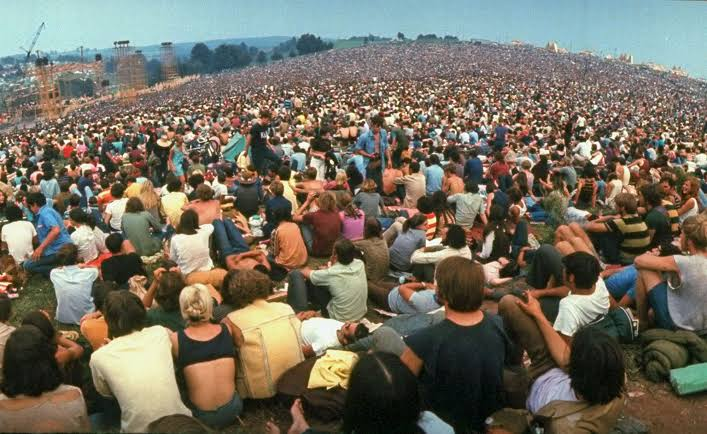
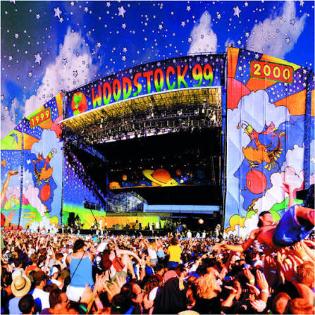

O festival nasceu do desejo de quatro jovens empresários (John Roberts, Joel Rosenman, Artie Kornfeld e Michael Lang) de criar um estúdio de gravação em Woodstock, Nova York. Para financiar o projeto, decidiram organizar um festival de música para cerca de 50 mil pessoas. O plano inicial deu errado quando a cidade de Woodstock proibiu o evento. Faltando poucas semanas, eles conseguiram alugar as terras do fazendeiro Max Yasgur, na cidade vizinha de Bethel. O que era para ser um evento comercial virou um festival gratuito de última hora, pois os organizadores não conseguiram instalar as bilheterias e cercas a tempo antes que a multidão começasse a chegar
O maior problema foi a superlotação, já que o público ultrapassou 400 mil pessoas, dez vezes o esperado. O trânsito parou as rodovias da região, forçando os artistas a chegarem de helicóptero. Fortes chuvas transformaram o local em um enorme lamaçal. Houve escassez crítica de comida, água potável e banheiros químicos, o que levou o governo local a declarar estado de calamidade pública. No aspecto financeiro, os organizadores acumularam um prejuízo imediato de mais de 1 milhão de dólares na época (equivalente a milhões hoje), devido à falta de cobrança de ingressos e aos custos astronômicos de logística de emergência. Eles só recuperaram o dinheiro anos depois com os lucros do filme e do álbum oficial do evento.
O palco de Woodstock reuniu 32 das maiores atrações do rock, folk e blues da época. O festival começou com Richie Havens e teve apresentações memoráveis de Joan Baez, Santana, Creedence Clearwater Revival, Janis Joplin, The Who e Joe Cocker. O encerramento ficou por conta de Jimi Hendrix na manhã de segunda-feira, 18 de agosto. Sua performance histórica incluiu uma versão distorcida e protestante do hino nacional dos Estados Unidos, imitando sons de bombas e metralhadoras com a guitarra, refletindo a dor da Guerra do Vietnã. Grandes nomes como The Beatles, Led Zeppelin e Bob Dylan foram convidados, mas recusaram por motivos diversos.
O sucesso da marca gerou edições comemorativas posteriores, mas com climas bem diferentes do original:Woodstock '94: Celebrou os 25 anos do evento com cerca de 350 mil pessoas. Ficou conhecido como "Mudstock" por causa de outra grande tempestade de lama, misturando artistas originais com bandas dos anos 90 como Green Day e Nine Inch Nails.Woodstock '99: Planejado para os 30 anos, terminou em desastre. O calor extremo, preços abusivos de água e comida, e falhas graves de segurança geraram revolta no público. O festival culminou em episódios graves de violência, saques, incêndios e denúncias de abuso sexual ao som de bandas como Red Hot Chili Peppers e Limp Bizkit.Woodstock 50 (2019): Uma tentativa de celebrar o cinquentenário foi cancelada semanas antes após problemas severos de financiamento, perda do local e desistência dos artistas principais.
A edição de 1999 aconteceu entre os dias 23 e 25 de julho, na antiga base aérea de Griffiss, em Rome, Nova York, para comemorar os 30 anos do Woodstock original. O festival reuniu mais de 200 mil pessoas e teve uma programação muito diferente da edição de 1969, com destaque para o rock e o nu metal. Entre os principais artistas estavam Metallica, Red Hot Chili Peppers, Limp Bizkit, Korn, Rage Against the Machine, Alanis Morissette, The Offspring, Kid Rock, DMX, Sheryl Crow, Creed, Bush, Megadeth e Willie Nelson.
Apesar da grande quantidade de atrações, o festival ficou marcado pelos problemas de infraestrutura, pelo calor intenso, pela falta de condições adequadas de higiene e pela dificuldade de acesso à água. As apresentações de Limp Bizkit, Rage Against the Machine e Metallica, no sábado, tiveram um público extremamente agitado, enquanto no domingo a situação piorou. Durante o show do Red Hot Chili Peppers, incêndios começaram a se espalhar pelo local e, após o encerramento da apresentação, parte da multidão destruiu e incendiou barracas e estruturas do festival. A polícia precisou intervir, houve feridos e prisões, e o evento terminou em um cenário de destruição.
Assim, o Woodstock 1999 entrou para a história não apenas pelas grandes apresentações musicais, mas também pelo caos que marcou seu encerramento. Diferentemente do Woodstock de 1969, lembrado pela ideia de paz e união, a edição de 1999 ficou conhecida pelos problemas de organização, pela violência e pelos incêndios que aconteceram no último dia.
